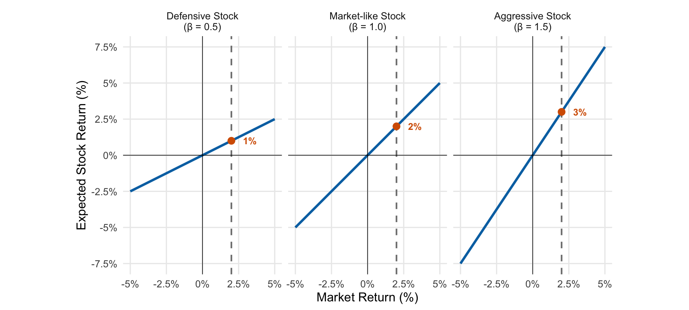
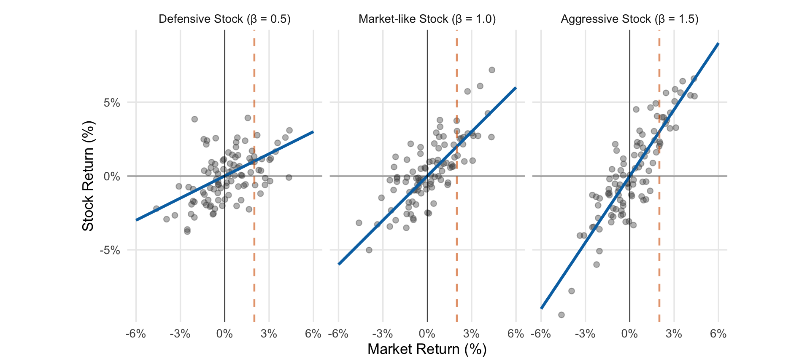
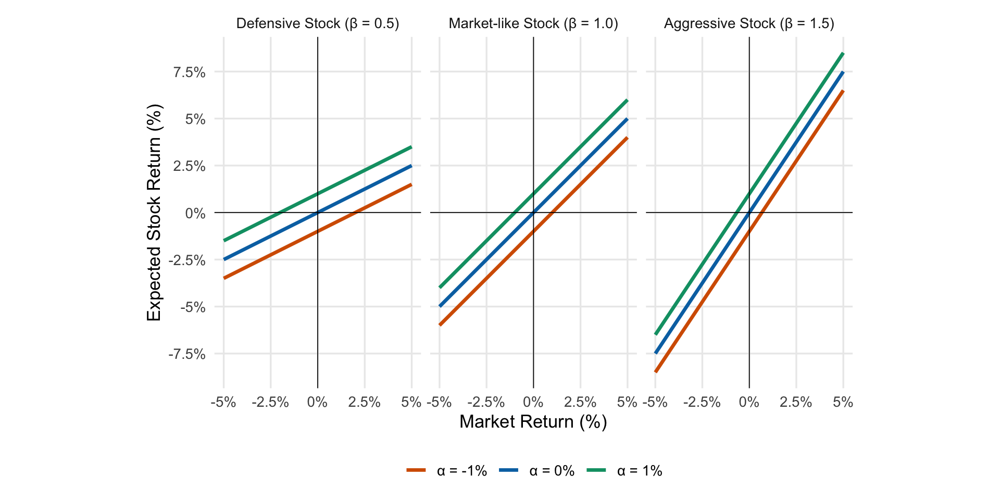
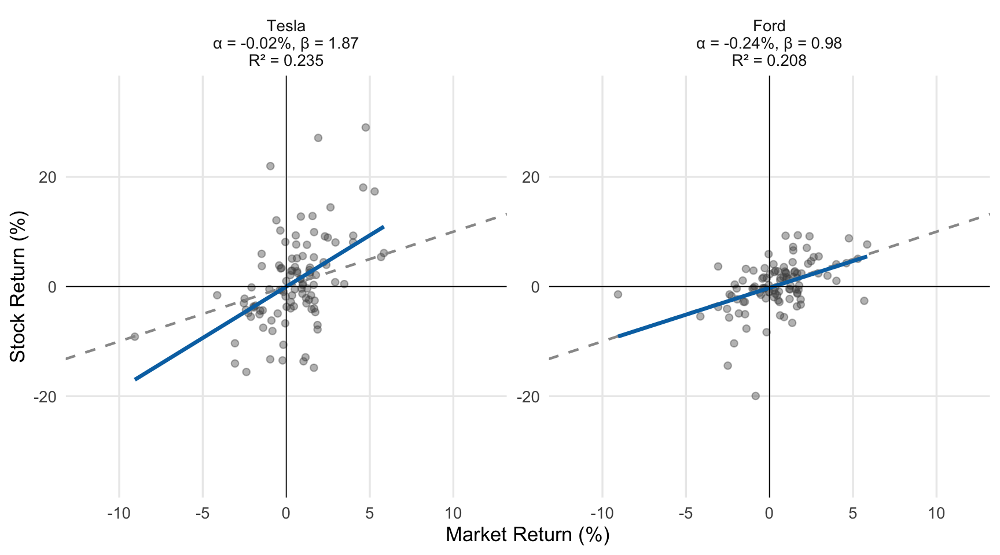
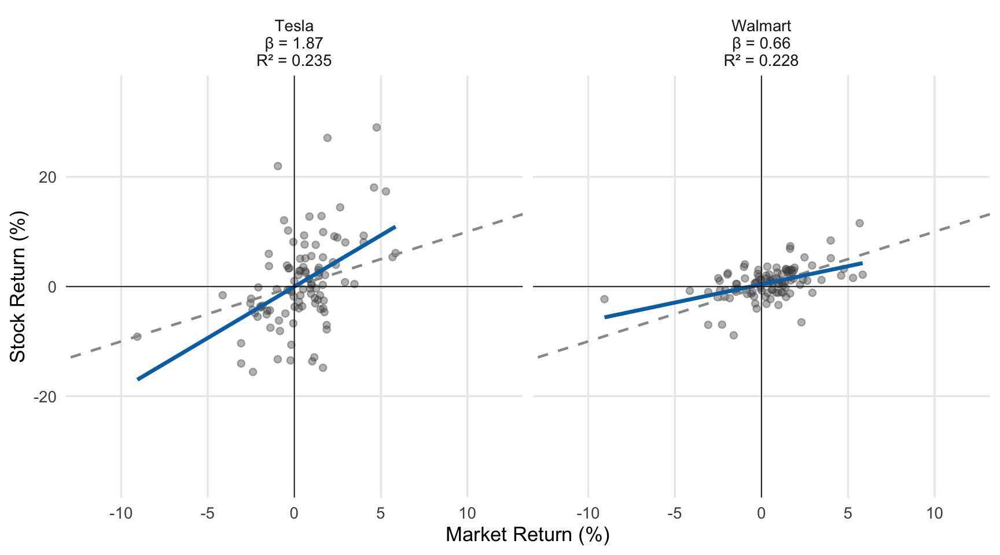
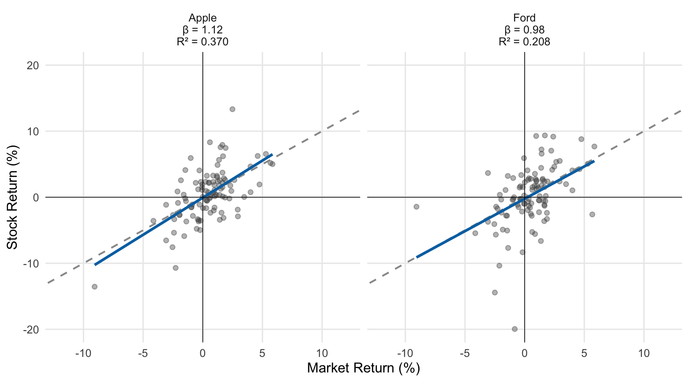
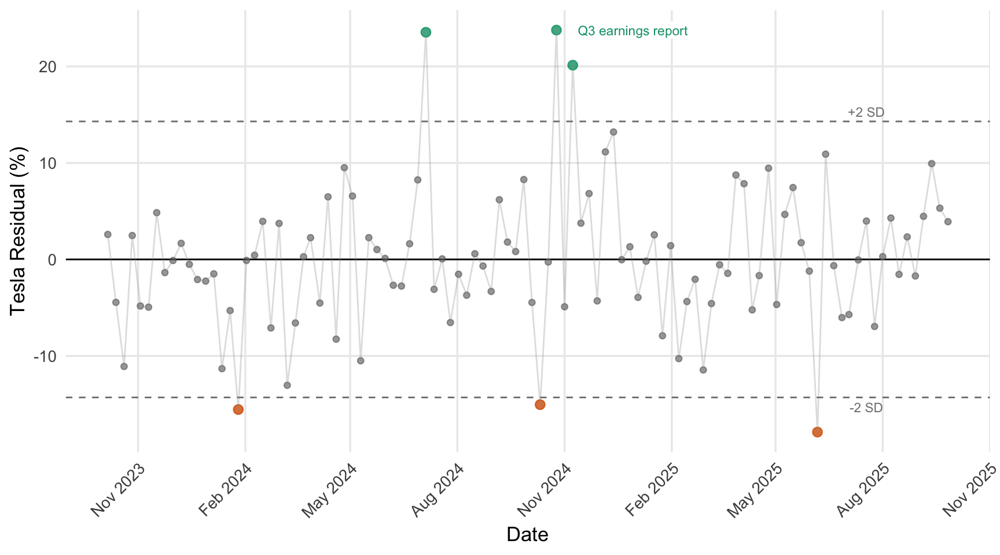

22 Case Study: The Market Model
The last chapter regressed sale price on living area to summarize a trend, make predictions, measure the strength of a linear relationship, and make adjusted comparisons. This case study applies the same regression tools to stock returns.
Linear regression has important applications in finance, particularly in understanding how individual stocks move relative to the overall market. The market model regresses a stock’s returns against market returns.
22.1 Data: Stock returns
We’ll analyze weekly returns for several stocks over a two-year period, using the S&P 500 (via the SPY ETF) as our measure of market returns.
Definition 22.1 (The market model)
Definition 22.1
The market model relates a stock’s returns to market returns:
\[R = \alpha + \beta R_M + \epsilon\]
where:
- \(R\) is the stock return (\(y\))
- \(R_M\) is the market return (S&P 500) (\(x\))
- \(\alpha\) is the stock’s “alpha” (its average return beyond what’s explained by market movements) (the y-intercept of the linear equation predicting stock returns from market returns; \(\beta_0\) in our notation earlier)
- \(\beta\) is the stock’s “beta” (sensitivity to market movements) (the slope of the linear equation predicting stock returns from market returns; \(\beta_1\) in our notation earlier)
- \(\epsilon\) is the idiosyncratic (stock-specific) return
Notation 22.1: Alpha and beta
In finance, \(\alpha\) and \(\beta\) are standard notation for what we’ve been calling \(\beta_0\) (intercept) and \(\beta_1\) (slope) in our general regression framework.
We will estimate these parameters using least squares, giving us \(\hat\alpha\) and \(\hat\beta\). First let’s get a better understanding of what they mean:
22.2 Understanding beta: Systematic risk
Before fitting actual data, let’s understand what beta measures. Beta measures exposure to systematic risk—how a stock’s average, expected, or predicted returns move with the market (these terms are synonymous). Systematic risk is the market-wide risk that diversification can’t remove. Combining many stocks averages away their stock-specific ups and downs, the \(\epsilon\) in the market model, but not the swings they share with the market.
- Beta < 1 (defensive): Stock dampens market movements, moving less than 1-for-1. On average, when the market is up 2%, the stock is up less than 2%.
- Beta = 1 (market-like): Stock moves 1-for-1 with the market. On average, a 2% market move yields a 2% stock move.
- Beta > 1 (aggressive): Stock amplifies market movements. On average, when the market is up 2%, the stock is up more than 2%.
There are two important points to emphasize here:
- We could replace “up” with “down” above — \(\beta>1\) means the stock tends to exaggerate or amplify market swings — representing high systematic risk — and \(\beta<1\) means the stock tends to dampen market swings — low systematic risk.
- “On average” is an important qualifier! No stock exactly tracks the market, and there will always be variation that’s unpredictable by market movements. In any given week when the market is up 2%, a stock with \(\beta=1\) probably isn’t up exactly 2%, but if we average the stock’s returns across all weeks that the market is up 2%, our model says that the stock’s average return will be 2%. In the plot below, if we were to average all the points close to the orange dashed line (representing 2% market returns), we will get approximately \(\beta\times 2\) (since we assumed \(\alpha=0\))

22.3 Understanding alpha: Returns beyond the market
Alpha represents average returns that exceed (or fall short of) what the stock’s beta and the market’s return would predict. (It’s also the predicted return when the market is flat — \(x=0\)). It’s a vertical shift of the lines given above, where we assumed \(\alpha=0\):

- Positive alpha: Stock returns more, on average, than its beta and the market’s return predict
- Zero alpha: Stock returns what its beta and the market’s return predict, on average
- Negative alpha: Stock returns less, on average, than its beta and the market’s return predict
Alpha and the error term \(\epsilon\) both describe returns that the market doesn’t explain, but in different ways. Subtracting \(\beta R_M\) from a stock’s return leaves \(\alpha + \epsilon\): a constant part, \(\alpha\), that is the same every week, and a part, \(\epsilon\), that changes from week to week and averages zero. So alpha is the stock’s average return beyond what the market explains, and \(\epsilon\) is one week’s departure from that average.
Given two stocks with identical \(\beta\) (systematic risk), we’d naturally prefer the one with higher \(\alpha\) — the expected returns are higher under any market condition.
22.4 Example: Tesla and Ford
Let’s fit the market model for two automotive stocks with very different characteristics: Ford and Tesla.
| Stock | Alpha (% per week) | Beta |
|---|---|---|
| Tesla | -0.02 | 1.87 |
| Ford | -0.24 | 0.98 |
The fitted equations, with returns in percent per week, are:
- Tesla: \(\widehat{R}_{\text{TSLA}} = -0.02 + 1.87 R_M\)
- Ford: \(\widehat{R}_{\text{F}} = -0.24 + 0.98 R_M\)

22.4.1 Interpreting alpha
Tesla’s \(\hat\alpha = -0.02\%\) represents its predicted (average) weekly return when the market return is zero. Ford’s \(\hat\alpha = -0.24\%\) also represents Ford’s predicted weekly return at zero market return. These alphas represent the part of each stock’s average return not explained by market movements.
These are estimates. What are the plausible values for each true alpha? The 95% confidence intervals are (-1.46%, 1.43%) for Tesla and (-1.06%, 0.58%) for Ford. Both intervals contain zero, so we actually don’t have strong evidence that either alpha differs from zero.
Technical detail 22.1: Excess returns, the CAPM, and Jensen’s alpha
Investments textbooks often run this regression on excess returns: returns minus the risk-free rate, \(r_f\), usually measured by the return on a Treasury bill. An excess return measures what an investor earned for bearing risk, beyond what a riskless investment paid over the same week.
The Capital Asset Pricing Model (CAPM) is a theory of which risks investors get paid to bear. Diversification removes stock-specific risk, so the CAPM says investors are compensated only for systematic risk, in proportion to beta:
\[E[R] - r_f = \beta\,(E[R_M] - r_f).\]
A stock’s expected excess return is its beta times the market’s expected excess return. A stock with \(\beta = 1.5\) should earn, on average, 1.5 times the market’s premium over Treasury bills; a stock with \(\beta = 0\) should earn only the risk-free rate.
Fitting the market model to excess returns,
\[R - r_f = \alpha_J + \beta (R_M - r_f) + \epsilon,\]
gives an intercept \(\alpha_J\) called Jensen’s alpha. If the CAPM holds, \(\alpha_J = 0\). A positive \(\alpha_J\) means the stock earned more, on average, than the CAPM says its beta justifies. This is the standard measure of risk-adjusted performance for stocks and funds.
The two versions have the same slope. Rearranging the equation above shows how their intercepts are related:
\[\alpha = \alpha_J + (1 - \beta)\, r_f.\]
The two alphas differ by \((1-\beta)\) times the risk-free rate. They are almost identical when beta is close to 1, and they drift apart as beta moves away from 1. Over our two years, \(r_f\) averaged about 0.09% per week (4.7% per year). Ford’s beta is 0.98, so its alpha barely moves: -0.24% per week on raw returns and -0.24% on excess returns. Tesla’s beta is 1.87, so its alpha shifts by about \((1 - 1.87) \times 0.09\% \approx -0.08\%\) per week, from +0.06% on excess returns to -0.02% on raw returns. That shift is tiny next to its standard error of 0.72%, so the conclusion stays the same: we have no strong evidence that either alpha differs from zero.
22.4.2 Interpreting beta
Tesla’s \(\hat\beta = 1.87\) means that when the market goes up by 1%, Tesla’s stock tends to go up by about 1.87%. Ford’s \(\hat\beta = 0.98\) means Ford moves about 0.98% for each 1% market move. Tesla’s beta greater than 1 makes it an aggressive stock—it amplifies market movements in both directions, with bigger gains when the market rises and bigger losses when it falls. Ford’s beta less than 1 technically makes it a defensive stock—it’s less sensitive to market swings, but the estimate is very close to one.
We have to be a little careful here — we’re interpreting the estimates, but we haven’t yet accounted for the set of plausible values of \(\beta\).
For Tesla, a 95% confidence interval for \(\beta_{\text{TSLA}}\) is (1.20, 2.54). One isn’t a plausible value; we have good evidence that Tesla stock has high systematic risk. Testing \(H_0: \beta = 1\) versus \(H_A: \beta \neq 1\) lets us quantify the strength of evidence against the null hypothesis of \(\beta=1\) with a t-statistic and p-value:
\[t = \frac{\hat\beta - 1}{\text{SE}(\hat\beta)} = \frac{1.873 - 1}{0.335} = 2.61\]
If Tesla’s true beta were 1, the t-statistic would be approximately standard normal, so the two-sided p-value is \(2 \times P(Z > 2.61) \approx 0.009\).
WarningDefault software tests
Note that the t-statistics and p-values reported in standard regression output test \(H_0: \beta = 0\) (no linear relationship) rather than \(H_0: \beta = 1\) (moving one-for-one with the market, on average).
For Ford: A 95% confidence interval for \(\beta_{\text{F}}\) is (0.60, 1.36). Clearly one is a plausible value, and the interval includes betas above and below one. While our best guess says that Ford’s beta is a little less than 1, the data are consistent with a true \(\beta=1\).
22.5 Comparing stocks: Slope versus strength of relationship
It’s important to distinguish between the slope of the relationship (beta) and the strength of the relationship (R² or correlation). Two stocks can have very different betas but similar R², or similar betas but very different R².
22.5.1 Similar correlation, different slopes
Let’s compare Tesla and Walmart:
| Stock | Beta | R² | Correlation |
|---|---|---|---|
| Tesla | 1.873 | 0.235 | 0.485 |
| Walmart | 0.664 | 0.228 | 0.478 |

Despite Tesla’s beta being roughly 2.8 times larger than Walmart’s, both stocks have similar R² values—market movements explain a similar proportion of variance in each stock’s returns. Equivalently, they both have about the same correlation with the overall market.
However, in absolute terms, the residuals for TSLA tend to be quite a bit larger than those for WMT: \(s_e = 7.19\%\) for TSLA, compared to \(s_e = 2.59\%\) for WMT. Why do we get similar R² values? Because R² is a relative measure, and Tesla exhibits much more overall volatility: the standard deviation of TSLA returns is 8.17%, compared to 2.94% for WMT.
The variance rules from Chapter 14 make this precise. In the market model, a stock’s return is \(\beta R_M\) plus a part \(\epsilon\) that is unrelated to the market, so its variance splits into two pieces:
\[\text{Var}(R) = \beta^2\,\text{Var}(R_M) + \text{Var}(\epsilon).\]
The first piece is systematic risk. Multiplying the market’s weekly standard deviation of 2.12% by beta gives 3.96% for Tesla and 1.40% for Walmart. The second piece is stock-specific risk, which \(s_e\) estimates: 7.19% for Tesla and 2.59% for Walmart. R² is the systematic share of the total variance, about 23% for both stocks. So the two stocks have the same mix of risk, but Tesla carries about 2.8 times as much systematic risk, and diversification can only shrink the second piece.
22.5.2 Similar slopes, different correlation
Now compare Apple and Ford:
| Stock | Beta | R² | Correlation |
|---|---|---|---|
| Apple | 1.124 | 0.370 | 0.608 |
| Ford | 0.979 | 0.208 | 0.456 |

These stocks have similar market sensitivity (betas), but different R²—Ford has more company-specific volatility that isn’t explained by market movements. We see this in the plot above as increased spread of Ford’s returns around the fitted line compared to Apple.
Tip 22.1: R²/correlation vs. \(\beta\) in the market model
R²/correlation and \(\beta\) tell us two different things about a stock’s returns:
- R²/correlation: How strong is the linear relationship — what proportion of total variability in returns can be predicted by market movements? R² is the systematic share of a stock’s risk.
- \(\beta\): Does the stock tend to amplify market movements (an “aggressive” stock) or dampen them (a “defensive” stock)? Beta times the market’s standard deviation is the amount of systematic risk.
22.6 Residuals as abnormal returns
The residuals from the market model, called abnormal returns in finance, represent returns that cannot be explained by overall market movements—these are company-specific or industry-specific shocks.

Large positive residuals indicate weeks when Tesla outperformed what the market model predicted; large negative residuals indicate underperformance. These often correspond to company-specific news: earnings surprises, product announcements, regulatory events, or CEO actions. Even with no news at all, we’d expect about 5% of weeks, or about 5 of our 104, to land outside the dashed lines; 6 do. For example, the large positive residual at the beginning of July 2024 coincides with stronger than expected deliveries of new cars. The largest residual, in the week ending October 25, 2024, followed a strong third-quarter earnings report: profits beat analysts’ expectations, and Tesla’s stock rose 22% on October 24, its best day in more than a decade. The large negative residual at the beginning of June 2025 coincided with a very public spat between Musk and President Trump. The other three flagged weeks line up with news too: a disappointing fourth-quarter earnings report and a warning of slower growth in late January 2024, a robotaxi event that underwhelmed investors in mid-October 2024, and the rally after the 2024 presidential election in early November. Not every extreme residual has a tidy explanation. And even when a news event lines up with a residual, it may not account for the whole thing: other things were going on with the company during those weeks, too.
Exercise 22.1: Interpreting beta
An analyst estimates market models for three stocks using weekly returns data. The S&P 500 index return is used as the market return. \(\text{SE}(\hat{\beta})\) is the standard error for \(\beta\) reported in the regression output.
Stock A (Utility Company): \(\widehat{R}_A = 0.08 + 0.65 \times R_M\), \(\text{SE}(\hat{\beta}) = 0.12\)
Stock B (Tech Startup): \(\widehat{R}_B = 0.15 + 1.45 \times R_M\), \(\text{SE}(\hat{\beta}) = 0.18\)
Stock C (Consumer Staples): \(\widehat{R}_C = 0.05 + 0.80 \times R_M\), \(\text{SE}(\hat{\beta}) = 0.10\)
where returns are expressed as percentages per week.
Interpret the beta coefficient for Stock B. When the market goes up by 1%, what happens to Stock B on average?
Which stock is most sensitive to market movements? Which is least sensitive?
For Stock A, construct a 95% confidence interval for the true beta. Is \(\beta = 1\) a plausible value?
Solution
1. Beta interpretation for Stock B:
Stock B has a beta of 1.45. When the market return increases by 1 percentage point, Stock B’s return tends to increase by 1.45 percentage points on average. This stock amplifies market movements—when the market is up 2%, Stock B tends to be up about 0.15 + 1.45(2) = 3.05% on average.
2. Most and least sensitive:
- Most sensitive: Stock B (\(\beta = 1.45\)) amplifies market movements the most. This is an aggressive stock with high systematic risk.
- Least sensitive: Stock A (\(\beta = 0.65\)) moves less than the market. This is a defensive stock with low systematic risk. Utility companies typically fall in this category because demand for electricity is stable regardless of economic conditions.
Stock C (\(\beta = 0.80\)) is also defensive, but less so than Stock A.
3. Confidence interval for Stock A’s beta: \[\hat{\beta} \pm 2 \times \text{SE}(\hat{\beta}) = 0.65 \pm 2(0.12) = 0.65 \pm 0.24 = [0.41, 0.89]\]
One is not a plausible value—the entire confidence interval falls below 1. We have good evidence that Stock A is a defensive stock with below-market systematic risk.
Exercise 22.2: Understanding alpha
Two mutual funds are evaluated using the market model with monthly returns (expressed as percentages):
Fund X: \(\widehat{R}_X = 0.25 + 0.95 \times R_M\), \(\text{SE}(\hat{\alpha}) = 0.15\)
Fund Y: \(\widehat{R}_Y = -0.10 + 1.05 \times R_M\), \(\text{SE}(\hat{\alpha}) = 0.18\)
where \(\text{SE}(\hat{\alpha})\) is the standard error of the estimated alpha.
Interpret the alpha (intercept) for Fund X. What does this represent?
Construct a 95% confidence interval for Fund X’s true alpha. Is there evidence of positive alpha?
Interpret the alpha for Fund Y and construct a 95% confidence interval. What does this tell you about Fund Y’s returns beyond what the market explains?
Both funds have betas close to 1.0. What does this mean about their market exposure? Based solely on these models, which fund has delivered more return beyond what the market explains?
Solution
1. Fund X alpha interpretation:
Fund X has an estimated alpha of 0.25% per month, or about 3% per year (0.25 × 12). Alpha represents average returns not explained by market movements—returns beyond what the fund’s beta and the market’s return would predict. The alpha is also the predicted return when the market return is zero.
2. Confidence interval for Fund X’s alpha: \[\hat{\alpha} \pm 2 \times \text{SE}(\hat{\alpha}) = 0.25 \pm 2(0.15) = 0.25 \pm 0.30 = [-0.05, 0.55]\]
The confidence interval includes zero, so we do not have strong evidence of positive alpha. While the point estimate suggests outperformance, the data are also consistent with zero alpha (no returns beyond what the market explains). We’d need more data or time to determine if this alpha is real or just sampling variability.
3. Fund Y alpha and confidence interval:
Fund Y has \(\hat{\alpha} = -0.10\%\) per month.
\[-0.10 \pm 2(0.18) = -0.10 \pm 0.36 = [-0.46, 0.26]\]
This confidence interval also includes zero. While the negative point estimate suggests slight underperformance, we don’t have strong evidence that the true alpha differs from zero. The fund may be performing roughly as expected given its market exposure, with the negative estimate potentially due to sampling variability. If the negative alpha is real, fees are a common cause.
4. Market exposure and alpha:
Both funds have betas close to 1.0, meaning they have approximately the same systematic risk as the overall market. They’re not particularly defensive or aggressive.
Based on the point estimates alone, Fund X has the higher alpha: \(\hat{\alpha} = 0.25\%\) per month versus Fund Y’s \(\hat{\alpha} = -0.10\%\). However, neither confidence interval excludes zero, so we can’t conclude with confidence that either fund has genuinely nonzero alpha (positive or negative).
Exercise 22.3: Abnormal returns
An analyst studies Microsoft (MSFT) stock using the market model with weekly returns (expressed as percentages):
\[\widehat{R}_{\text{MSFT}} = 0.12 + 1.15 \times R_M\]
The model has \(s_e = 3.2\%\) (residual standard error).
Consider these three weeks:
| Week | Market Return | MSFT Return |
|---|---|---|
| 1 | +2.5% | +3.8% |
| 2 | -1.8% | -1.5% |
| 3 | +0.5% | -2.0% |
Calculate the predicted MSFT return and residual for each week.
In which week did Microsoft have the best company-specific performance (after adjusting for market movements)?
In which week did Microsoft have the worst company-specific performance?
Was any of these weeks unusual for Microsoft? Use the residual standard error.
Solution
1. Predictions and residuals:
Week 1:
- Predicted: \(\hat{R} = 0.12 + 1.15(2.5) = 0.12 + 2.875 = 2.995 \approx 3.0\%\)
- Residual: \(e = 3.8 - 3.0 = +0.8\%\)
Week 2:
- Predicted: \(\hat{R} = 0.12 + 1.15(-1.8) = 0.12 - 2.07 = -1.95\%\)
- Residual: \(e = -1.5 - (-1.95) = +0.45\%\)
Week 3:
- Predicted: \(\hat{R} = 0.12 + 1.15(0.5) = 0.12 + 0.575 = 0.695 \approx 0.70\%\)
- Residual: \(e = -2.0 - 0.70 = -2.70\%\)
2. Best company-specific performance:
Week 1 had the best company-specific performance with a residual of +0.8%. Microsoft outperformed expectations by 0.8 percentage points after accounting for the strong market that week.
3. Worst company-specific performance:
Week 3 had the worst company-specific performance with a residual of -2.70%. Despite a slightly positive market, Microsoft fell 2%, underperforming expectations by 2.7 percentage points.
4. Unusual weeks:
No. All three residuals are smaller than the residual standard error of 3.2%, so each week is well within Microsoft’s typical week-to-week variation around the market model. Week 3’s residual of -2.70% is the largest, at about 0.8 residual standard errors.
Data used in this section
- Weekly Asset Returns (2023–2025) supplies the weekly returns for SPY, Tesla, Ford, Walmart, and Apple.